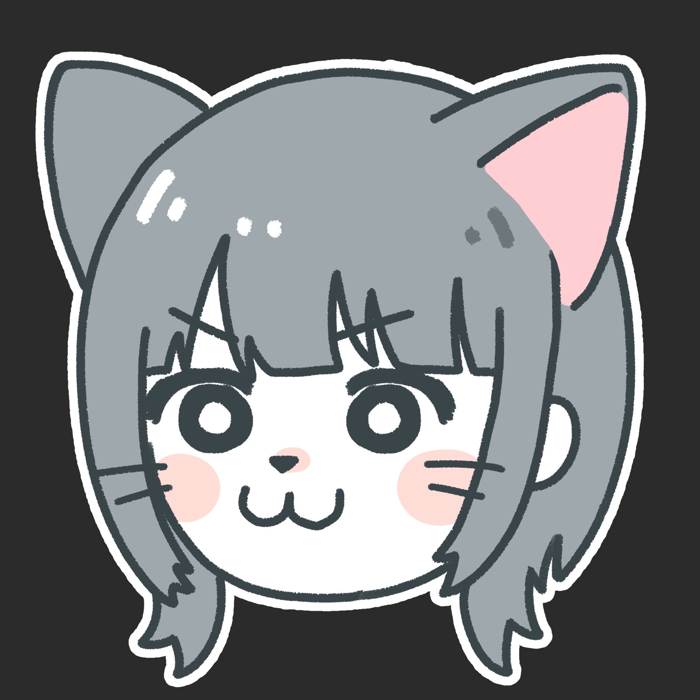

デザイン系専門学校卒業後、接客系のバイトを経て、WEB制作の勉強を開始。 職業訓練マークアップウェブデザイン科を修了。
イラスト制作が趣味でデザインやイラストレーションについて深い関心を持ち、現在は独学でWEB制作やデザイン、ワードプレス、サーバー管理等を勉強中です。PhotoshopとClipStudio（イラスト制作ソフト）の操作が得意で、趣味や副業でイラスト制作もしています。（個人で制作したイラストギャラリーサイト）
専門学校で基本的な操作や印刷、紙媒体について学びました。訓練校でも学び、名刺やバナーの作成、ロゴの作成、チラシやポスター等の印刷物作成ができます。
現在も独学でパスについての理解を深め、illustratorを用いてのイラスト制作について学んでいます。
専門学校で基本的な操作やパッケージ制作イラスト制作について学びました。訓練校ではバナー制作、デザインカンプの制作を学び、個人でも日常的に使用しているため操作が得意です。イラスト作成、写真加工、デザイン作成、デザインカンプ作成、バナー作成が可能です。
基本的な操作から技術的な操作も可能です。ショートカットキーも使いこなせます。
教科書や講師からの課題、グループ制作、自主制作等のWebサイトをいくつかコーディングしました。 エディターソフトの操作に加え、Adobe Dreamweaverも使用可能です。
レスポンシブ対応のサイト作成が可能で、現在は独学で理解を深めています。
訓練校ではJavaScriptについては簡単な知識しか学びませんでした。なので理解したという状態には遠いですが独学で勉強を継続中です。
訓練校で一通り学習しました。jQueryでWEBサイトでよく使われているプラグインなどを導入することが可能です。
独学で教本や動画教材で学習中です。SEOについても学習を始めました。サーバーインストールからテーマインストール、コンテンツの編集が可能です。
このサイトは私がイラストレーターとして活動するなら、というのを想定し制作しました。私の制作イラストをギャラリーに使用し、イラストを目立たせるためあえてカラーは無彩色の黒と白とグレーのみを使用しました。ロゴ制作にも力を入れ、シンプルかつスタイリッシュさ、洗練されたデザインになるよう意識しました。またユーザビリティも考え、コンタクトや価格のボタンを全ページに配置し気になった方がいつでもコンタクトページへ飛べるようにしました。
アニメーションにはjQueryを使い、ページ遷移にふわっとさせ、ページ切り替えがわかりやすくなるようにしたり、画像を右からスライドして表示させたりして楽しませるページにしました。
レスポンシブデザインにも力を入れ余白を意識し、ページが崩れないようまたさらに見やすくなるよう入念に作成しました。
制作 900分（3日）
制作日 4月
担当 デザインカンプ 主なデザイン キャラクターイラスト 部分的なコーディング（分担）
グループ制作課題で、主なデザイン、キャラクターを担当しコーディングを分担し制作しました。イラストを多く取り入れたポップな印象のリクルートページ。企業様のイメージカラーのブルーを際立たせるため反対色のオレンジをメインカラーに使用し、サブカラーに水色を使用しました。かわいいイラストを使用しポップなイメージを際立たせ、応募したくなるようなサイトを目指し制作しました。
制作 700分
制作月 4月
「ピクルス推進委員会」WEBサイト
ピクルスを広めたいというコンセプトのもと、ロゴ、デザインカンプ、コーディングまで制作しました。文字が多めのサイトなので余白を多めに使用し、読みやすくなるように意識しました。 また、すっきりと見せるためベースカラーを白にし、ピクルスをイメージした緑をサイトメインカラーとして使用しました。文字も黒ではなく深緑を使用し、まとまりのあるデザインを意識しました。
制作 250分
制作月 3月
様々なペットショップのサイトを研究し暖かさのあるアットホームなイメージになるよう意識し制作しました。主にレスポンシブの学習のためコンテンツは少なめです。
制作 430分
制作月 3月
クラゲの神秘さと魅力をより親しみやすく伝えられる様に意識し、画像や動画をたくさん埋め込むことでクラゲの魅力や楽しさが伝わるように制作しました。
制作 300分
制作月 3月
「ラーメン店LP」デザインカンプ
illustratorの学習のため、illustratorを用いて制作したデザインカンプです。ロゴも作成しました。文字や説明が多めのページのため、あえてバックに彩度を落とした画像を設置し、見ていて飽きさせないページを意識しました。 ラーメンが好きな男性をペルソナに設定し、赤と白と黒のカラーを使用してスタイリッシュなデザインを意識しました。
制作 135分
制作月 3月
カフェ「cozychat」デザインカンプ
訓練校でPhotoshopを使用し、初めて制作したデザインカンプです。用意された素材を使い制作しました。
制作 240分
制作月 2月
{kind=link}
{kind=link}
{kind=link}
{kind=link}
{kind=link}
{kind=link}
{kind=link}
{kind=link}
{kind=link}
{kind=link}
{kind=link}